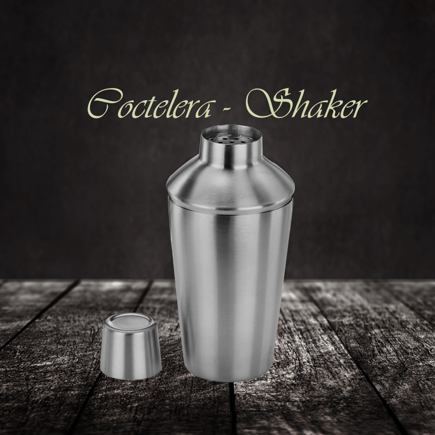
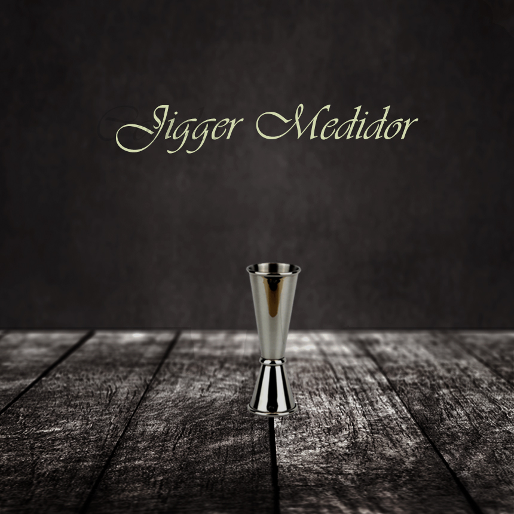
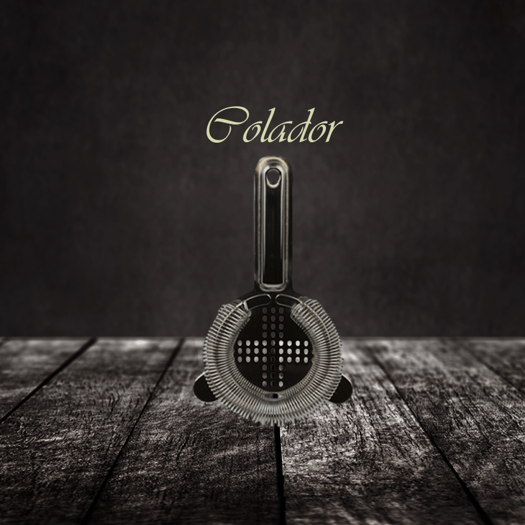
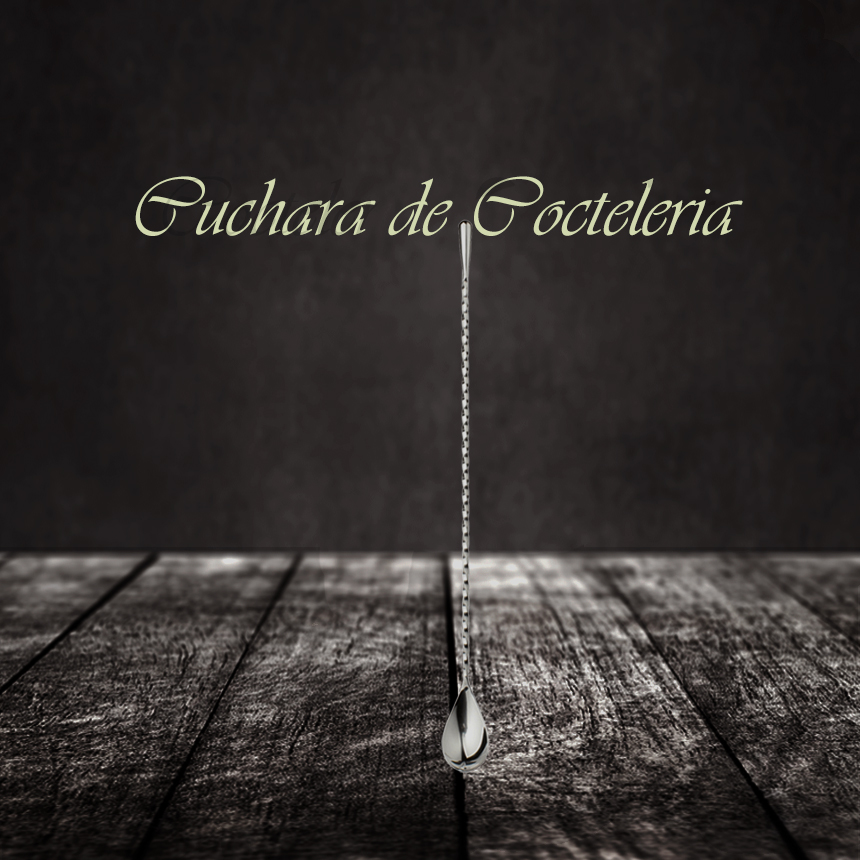
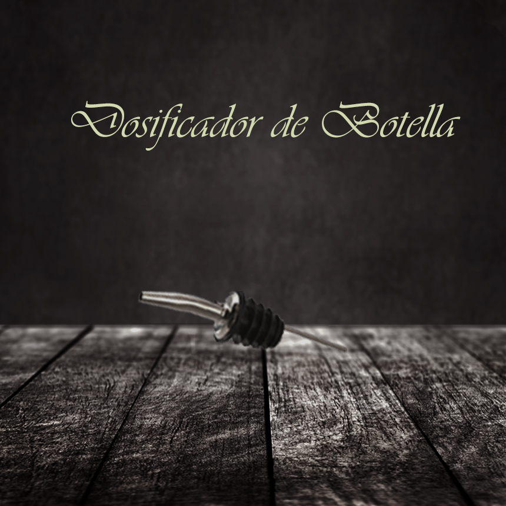

Elementos de Cocteleria

También es conocida como «shaker» o «mixer», su composición más habitual es acero
inoxidable, su capacidad más típica oscila entre 500ml a 750ml siendo el tamaño más
habitual este último.
Lo normal es encontrar una con 3 piezas, vaso, filtro y tapón.

Lleva dos medidas por ambos lados en diferentes tamaños, siendo la combinación más
típica el de una onza
(30ml) por arriba y media onza por abajo (15ml)

Es un colador o filtro, que se usa para vaciar el líquido evitando partículas indeseadas
como por ejemplo las derivadas de la pulpa de la fruta empleada, así como para verter el
producto evitando que los hielos se salgan

De largura considerablemente superior a una cuchara tradicional, tiene un uso muy claro
en la
mezcla de los diferentes ingredientes del coctel

Facilitaran la tarea a la persona que hace los cocteles, de esta manera el flujo de
líquido
desde la botella hasta el jigger será mucho más preciso y podrá adaptarse a cada
circunstancia dependiendo de la necesidad